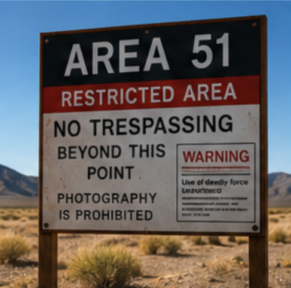

Internet Mysteries
Exploring the strangest theories the internet can't stop talking about.

1. Birds Aren't Real
Many people joke that birds are actually government drones designed to monitor the public.
Evidence:
- Birds sit on power lines.
- They seem to be everywhere.
- They can fly away before being questioned.
Suspicion Level: 👽👽👽👽☆ (4 out of 5 Aliens)

2. Area 51
Nobody knows exactly what happens at Area 51, which is why everyone assumes aliens are involved.
Possible Theories:
- Secret spacecraft
- Alien technology
- Unlimited free snacks
Mystery Level: 👽👽👽👽👽 (5 out of 5 Aliens)
3. The Bermuda Triangle
Boats disappear. Planes disappear. Maps become suggestions.
Theories:
- Aliens
- Time travel
- Really bad directions
Confusion Level: 👽👽👽👽☆ (4 out of 5 Aliens)
Think You Know the Truth?
Keep an open mind...or not. We're not here to judge.
Explore Everyday Conspiracies